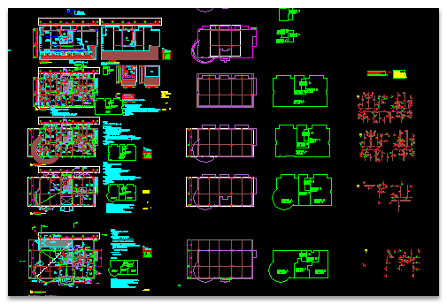
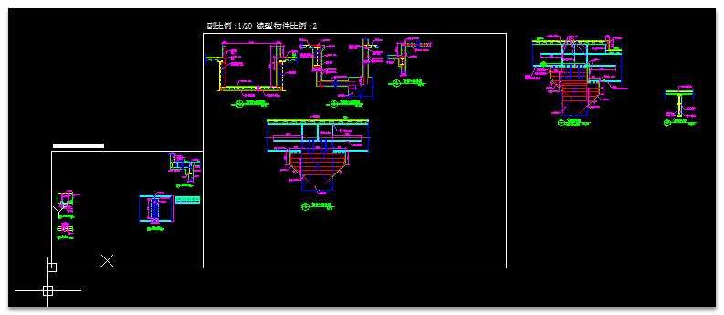
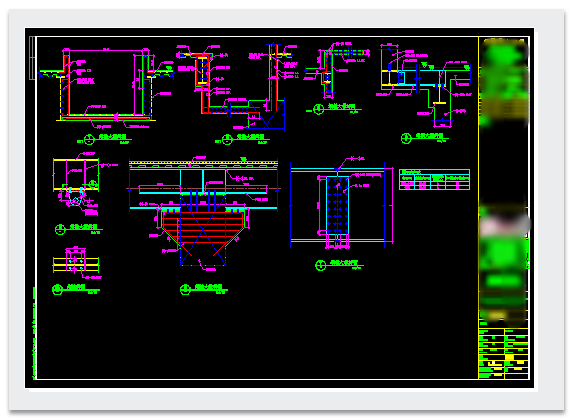
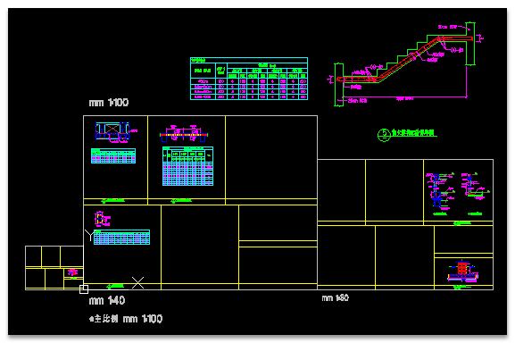
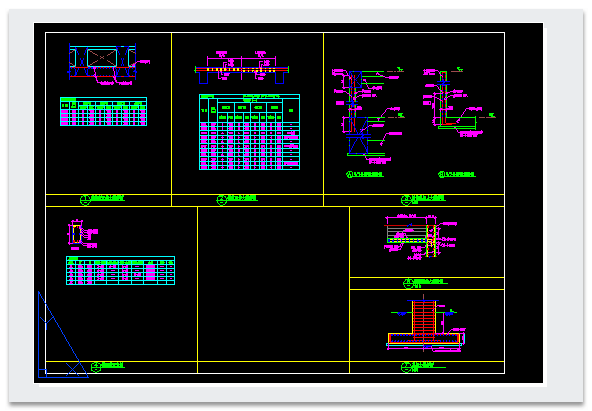

👇完整學習請參考 出圖大師課程👇
https://www.autocad-tw.com/t24350-topic
關於圖面多種功能設置需求，如：「建立視埠+設定比例+鎖護視埠」
使用者可以透過自訂工具方式，加入AutoCAD巨集(連續指令動作)，即可完成繁瑣的繪圖步驟。
自訂方式請依須求設置，通常可以透過「CUI自訂-工具列按鈕」或「工具選項板-工具按鈕」，範例操作使用「工具選項板」方式。


※此巨集範例設計結合了三種功能：
1.使用「Defpoints」圖層，透過「MVIEW」指令建立視埠，這樣視埠邊框就不會出圖。2.MSMODE自動切換到「視埠模型空間」，使用「ZOOM」指令定義「視埠區域(繪圖區範圍)」。
3.PSMODE切換回「配置空間」後鎖護視埠。
AutoCAD巨集語法文字檔下載載點
代碼:
^C^C-LAYER;M;Defpoints;;_MVIEW;END;\END;\MSPACE;^C^CZOOM;W;END;\END;\PSPACE;-VPORTS;L;ON;L;;載點1： https://app.box.com/s/j2uk6yz1z1eq5ft78clg載點2： https://drive.google.com/file/d/1sjAwH4Mpf-BKEwuRNHQCQoWP5oy2B2mC/view?usp=sharing
註：關於「繪圖區範圍」圖塊設置，可以參考此篇教學：[測驗題]標準作業：A1圖框二種標註比例圖面(三)
※模型空間排版步驟：
大家了解「建立視埠+設定比例+鎖護視埠」之後，可試試進階操作，透過「自訂工具」步驟完成「模型空間排版」。
範例中有3種繪圖比例，需建立3組「繪圖區範圍」，接著使用「現地編輯REFEDIT」，編輯「繪圖區範圍圖塊」加入邊界，即可同步更新3組「繪圖區範圍」。
●排版前

●排版後

●定義視埠完成配置圖面

▼影片操作：
以上方式是屬「改良型」步驟，比較適用建築領域，可以透過「繪圖區範圍」有效規劃「模型空間」使用。
不會有開啟圖檔時，切換到模型空間中有很多圖，不知道哪一些可以移動或刪除，或者要在配置空間加上視埠，可能要東挪西挪視埠，比較不易管理。


透過「繪圖區範圍」設置，爾後開圖切換到模型空間時，即可立馬判斷在「繪圖區範圍」以外的圖，即是參考用圖可以移動或刪除。








而且還可以適用配置「圖面分圖」需求，使用官方「標準型」開視埠只能大概的定義分圖位置，現在可以透過「繪圖區範圍」精確定義分圖界線(無縫接軌)。
提供「圖面分圖」影片供大家參考：[影片]配置視埠 分圖
PS:方法有很多種，看看大家習慣哪個方式，請自由選擇使用，有問題歡迎大家一同研討吧。
👇20240216 新增UCS旋轉視埠巨集教學
AutoCAD巨集語法文字檔下載
代碼:
^C^C-LAYER;M;Defpoints;;_MVIEW;END;\END;\MSPACE;UCS;\\;PLAN;;ZOOM;W;END;@;END;\PSPACE;-VPORTS;L;ON;L;;載點： https://app.box.com/s/9rtvg91gws7jonkxnd16rvieas2c3qga👇專屬B會員免回文直接下載:
[專屬分享]選取繪圖區範圍程式+UCS旋轉視埠巨集https://www.autocad-tw.com/t28581-topic
1.延伸範例主題： [觀念]規劃圖面單位及圖面比例
2.延伸範例主題： [測驗題]標準作業：A1圖框製作、樣版檔設定(一)
3.延伸範例主題： [測驗題]標準作業：A1圖框樣版檔規劃(二)
4.延伸範例主題： [測驗題]標準作業：A1圖框二種標註比例圖面(三)
5.延伸範例主題： [進階]AutoCAD巨集－建立視埠+設定比例+鎖護視埠
6.延伸範例主題： [進階]工具選項板+標準A1屬性圖框設置
7.延伸範例主題： [私房教學1-5]AutoCAD配置空間分圖作業